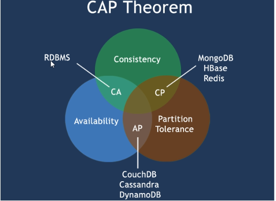
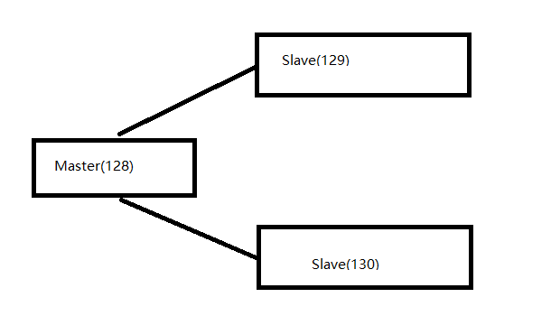
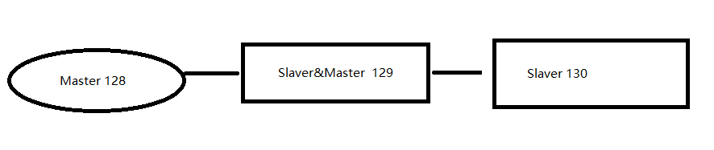

Redis-周阳
一、NoSql 入门和概述
1、入门概述
1、为什么使用NoSQL ?
今天我们可以通过第三方平台(如: Google,Facebook等)可以很容易的访问和抓取数据。用户的个人信息，社交网络，地理位置，用户生成的数据和用户操作日志已经成倍的增加。我们如果要对这些用户数据进行挖掘，那SQL数据库已经不适合这些应用了，NOSQL数据库的发展也却能很好的处理这些大的数据。
2、是什么
NosQL(NoSQL = Not Only sQL)，意即“不仅仅是SQL”，
==泛指非关系型的数据库==。随着互联网web2.0网站的兴起，传统的关系数据库在应付web2.0网站，特别是超大规模和高并发的SNS类型的web2.0纯动态网站已经显得力不从心，暴露了很多难以克服的问题，而非关系型的数据库则由于其本身的特点得到了非常迅速的发展。NoSQL数据库的产生就是为了解决大规模数据集合多重数据种类带来的挑战，尤其是大数据应用难题，包括超大规模数据的存储。
(例如谷歌或Facebook每天为他们的用户收集万亿比特的数据)。这些类型的数据存储不需要固定的模式，无需多余操作就可以横向扩展。
3、能干嘛
1、易扩展
NoSQL数据库种类繁多，但是一个共同的特点都是去掉关系数据库的关系型特性。
数据之间无关系，这样就非常容易扩展。也无形之间，在架构的层面上带来了可扩展的能力。
2、大数据量高性能
NoSQL数据库都具有非常高的读写性能，尤其在大数据量下，同样表现优秀。这得益于它的无关系性，数据库的结构简单。
一般MySQL使用Query Cache，每次表的更新Cache就失效，是一种大粒度的Cache,在针对web2.0的交互频繁的应用，Cache性能不高。而NoSQL的Cache是记录级的，是一种细粒度的Cache，所以NoSQL在这个层面上来说就要性能高很多了
3、多样灵活的数据模型
NoSQL无需事先为要存储的数据建立字段，随时可以存储自定义的数据格式。而在关系数据库里，增删字段是一件非常麻烦的事情。如果是非常大数据量的表，增加字段简直就是一个噩梦
4、传统RDBMS vs NoSQL
2、3V+3高
1、 大数据时代的3V
- 海量Volume
- 多样Variety
- 实时Velocity
2、互联网需求的3高
- 高并发
- 高可扩
- 高性能
3、当下的 NoSql经典应用
当下的应用是sql和nosql一起使用
数据模型比较简单
需要灵活性更强的IT系统
对数据库性能要求较高
不需要高度的数据一致性
4、NoSql数据模型简介
5、NoSql 数据库的四大分类
KV键值：
文档型数据库（BSON格式比较多）[CouchDB，MongoDB]
列存储数据库
图关系数据库
6、在分布式数据库中 CAP原理
1、传统的关系型数据库 ACID 分别是什么
- A:(Atomicity)l原子性
- C:(Consistency)一致性
- l:(lsolation)独立性
- D:(Durability)持久性
2、CAP
- C:Consistency(强一致性)
- A:Availability (可用性)
- P:Partition tolerance (分区容错性)
最多只能同时较好的满足两个。
- CA–单点集群，满足一致性，可用性的系统，通常在可扩展性上不太强大。
- CP–满足一致性，分区容忍必的系统，通常性能不是特别高。
- A– 满足可用性，分区容忍性的系统，通常可能对一致性要求低一些。

二、Redis入门介绍
1、入门概述
1、是什么
是完全开源免费的，用C语言编写的，遵守BSD协议，是一个高性能的(key/value)分布式内存数据库，基于内存运行并支持持久化的NoSQL数据库，是当前最热门的NoSql数据库之一,也被人们称为数据结构服务器
Redis 与其他 key - value缓存产品有以下三个特点
- Redis支持数据的持久化，可以将内存中的数据保持在磁盘中，重启的时候可以再次加载进行使用
- Redis不仅仅支持简单的key-value类型的数据，同时还提供list，set， zset， hash等数据结构的存储
- Redis支持数据的备份，即master-slave模式的数据备份
2、能干嘛
- 内存存储和持久化: redis支持异步将内存中的数据写到硬盘上，同时不影响继续服务
- 取最新N个数据的操作，如:可以将最新的10条评论的ID放在Redis的List集合里面
- 模拟类似于HttpSession这种需要设定过期时间的功能
- 发布、订阅消息系统
- 定时器、计数器
3、怎么玩
- 数据类型、基本操作和配置
- 持久化和复制，RDB/AOF、
- 事务的控制
- 复制
- ……
2、Redis 启动后杂项基础知识讲解
1、Redis的性能测试
1 | [root@linux_128 bin]# ./redis-benchmark |
2、默认16个数据库，类似数组下表从零开始，初始默认使用零号库
3、select：命令切换数据库
4、dbsize：查看当前数据库的key的数量
5、flushdb：清空当前库
6、Flushall：全部库数据被删除
7、启动方式
1 | # 使用这种方式启动，可以解决乱码的问题 |
三、Redis 数据类型
1、Redis 的五大数据类型
- String 字符串
- Hash 哈希
- List 列表
- Set 集合
- Zset 有序集合
2、Redis 键(key)
- keys * 查找所有的key
- exists key 判断某个key是否存在
- move key dbindex 当前库就没有了，被移动到指定库了
- expire key second 为给定的key设置过期时间
- ttl key 查看还有多少秒过期，-1表示永不过期，-2表示已过期
- type key 查看你的key是什么类型
- 设置同一个 key ，值会被覆盖
- type key 查看数据类型
- del key 删除指定的key
- RANDOMKEY 从当前数据库中随机返回(不删除) 一个key
- RENAME key newkey 将key 改名为newkey 。当key 和newkey 相同，或者key 不存在时，返回一个错误。当newkey 已经存在时，RENAME 命令将覆盖旧值
3、字符串 String
- set/get/del/strlen
- append key value 给 key 追加 value值（如果key不存在，相当于 set key）
- Incr/decr/incrby/decrby,一定要是数字才能进行加减
- getrange/setrange 范围内取值/范围内设值
- getrange key start end 截取字符串
- getrange key1 0 -1 查看全部字符串（和get key 是一样的）
- setrange k2 1 “xxx” 替换指定位置开始的字符串
- setex(set with expire) 设置过期时间
- setnx(set if not exist) 值不存在的时候，再设置值，否知就不设置值
- mset/mget/msetnx 设置多个值/获取多个值/多个值一起设置（有一个值存在的，都存不进去）
- getset (先get再set)
4、列表 List
所有的list 的命令都是 以 l 开头
- lpush/rpush/lrange : 压栈/打印栈
- LRANGE list 0 -1 :打印栈中所有的值
- lpop/rpop 出栈
- LINDEX l2 3，按照索引下标获得元素(从上到下)
- LLEN l2 长度
- lrem list N value： 删N个value
- ltrim key 开始index 结束index，截取指定范围的值后再赋值给key
- rpoplpush 源列表 目的列表：出栈->压栈
- lset key index value
- linsert key before/after 值1 值2
性能总结
它是一个字符串链表，left、 right都可以插入添加;如果键不存在，创建新的链表;
如果键已存在，新增内容;
如果值全移除，对应的键也就消失了。
链表的操作无论是头和尾效率都极高，但假如是对中间元素进行操作，效率就很惨淡了。
5、集合 Set
所有的 set 的命令都是 以 s 开头
- sadd/smembers/sismember 添加多个成员/列出成员/判断集合是否存在某个值
- scard set，获取集合里面的元素个数
- srem key value 删除集合中元素
- srandmember key 某个整数(随机出几个数)
- spop key 随机出栈
- smove key1 key2 在key1里某个值 作用是将key1里的某个值赋给key2
- 数字集合类
- 差集：sdiff
- 交集：sinter
- 并集：sunion
6、哈希 hash
KV模式，但V是一个键值对
- hset key field value 存值
- hget key field 取值
- hmset key field value [field value …] 存多个值
- hmget key field [field …] 取多个值
- hgetall key 获取全部的值
- hdel key field [field …] 删除hash指定的key字段，对应的value也就没有了
- hlen key 获取数组的长度
- hexists key 在key里面的某个值的key
- hkeys key 获得所有的field
- hvals key 获得所有的value
- hincrby/hincrbyfloat
- hsetnx
7、有序集合 Zset
- zadd myset 1 one 添加 一个值
- zrange myset 0 -1 遍历
- zrangebyscore myset -inf +inf 排序，从负无穷到正无穷
- zrem key 某score下对应的value值，作用是删除元素
- zcard/zcount key score区间/zrank key values值，作用是获得下标值/zscore key 对应值,获得分数
- zrevrank key values值，作用是逆序获得下标值
- zrevrange
- zrevrangebyscore key 结束score 开始score
8、三种特殊的数据类型
1、Geospatial 地理位置详解
redis 3.2 版本就出了，可以推算地理位置的信息。
# 添加 127.0.0.1:6379> geoadd china:city 116.50 39.84 beijing (integer) 1 127.0.0.1:6379> geoadd china:city 121.47 31.23 shanghai (integer) 1 127.0.0.1:6379> geoadd china:city 160.50 29.53 chongqing (integer) 1 127.0.0.1:6379> geoadd china:city 114.05 22.52 shenzhen (integer) 1 127.0.0.1:6379> geoadd china:city 120.16 30.24 hangzhou (integer) 1 127.0.0.1:6379> geoadd china:city 108.96 34.26 xian (integer) 1 127.0.0.1:6379>1
2
3
4
5
6
7
8
9
10
11
12
13
14
15
16
17
18
19
20
21
22
23
24
25
26
27
28
29
30
31
32
2. **geopos china:city beijing** 获取指定的值
3. **geodist china:city beijing shanghai km** 获取两地之间的距离（km 千米，m 米）
4. 我附近的人，（通过半径来搜索）
```shell
127.0.0.1:6379> georadius china:city 110 30 1000 km # 获取当前经纬度范围的值
1) "xian"
2) "shenzhen"
3) "hangzhou"
127.0.0.1:6379> georadius china:city 110 30 1000 km withdist #显示到中心距离的位置
1) 1) "xian"
2) "483.8340"
2) 1) "shenzhen"
2) "924.6408"
3) 1) "hangzhou"
2) "977.5143"
127.0.0.1:6379> georadius china:city 110 30 1000 km withcoord # 显示他人的定位信息
1) 1) "xian"
2) 1) "108.96000176668167114"
2) "34.25999964418929977"
2) 1) "shenzhen"
2) 1) "114.04999762773513794"
2) "22.5200000879503861"
3) 1) "hangzhou"
2) 1) "120.1600000262260437"
2) "30.2400003229490224"
127.0.0.1:6379> georadius china:city 110 30 1000 km count 2 #显示多少个
1) "xian"
2) "shenzhen"GEORADIUSBYMEMBER 定位 元素
1
2
3
4
5
6
7127.0.0.1:6379> GEORADIUSBYMEMBER china:city beijing 1000 km
1) "beijing"
2) "xian"
127.0.0.1:6379> GEORADIUSBYMEMBER china:city shanghai 1000 km
1) "hangzhou"
2) "shanghai"
127.0.0.1:6379>
2、Hyperloglog
基数：不重复的元素
- PFADD key element [element …] 添加
- PFCOUNT key [key …] 统计
- PFMERGE destkey sourcekey [sourcekey …] 合并
3、Bitmap
位运算
- ``` shell
记录周一到周日的打卡
127.0.0.1:6379> SETBIT sign 0 1
(integer) 0
127.0.0.1:6379> SETBIT sign 1 0
(integer) 0
127.0.0.1:6379> SETBIT sign 2 0
(integer) 0
127.0.0.1:6379> SETBIT sign 3 1
(integer) 0
127.0.0.1:6379> SETBIT sign 4 1
(integer) 0
127.0.0.1:6379> SETBIT sign 5 0
(integer) 0
127.0.0.1:6379> SETBIT sign 6 0
(integer) 0
127.0.0.1:6379>1
2
3
4
5
6
7
8
9
10
11
2. **GETBIT sign 6** 查看
3. **BITCOUNT sign** 统计是1 个天数
## 四、解析配置文件 redis.conf
获取所有的 配置信息
```sh
config get *
0、NETWORK
1 | bind 127.0.0.1 #绑定Ip |
1、units 单位
大小写不敏感
2、includes 包含
分模块，
和我们的Struts2配置文件荜似，可以通过includes包含，redis.conf可以作为总闸，包含其他
3、GENERAL通用
- ==daemonize== :以守护进程的方式运行，默认是 no，需要手动开启为 yes(开启后，以后台方式运行，开启后，不占用一个窗口)
- pidfile ：如果以后台方式运行，需要指定一个pid文件。
- ==port==：端口号
- tcp-backlog：511 保持官方设置即可
- timeout：0 代表不关闭，一直连接
- bind
- tcp-keepalive
- loglevel：日志的级别
- logfile: 日志的名字
- syslog-enabled ：是否开启系统日志
- syslog-ident：系统日志的标志
- syslog-facility
- databases：
4、SNAPSHOTTING快照
Save
1
2
3
4# 如果 900秒内 至少有一个key进行修改，进行持久化操作
save 900 1
save 300 10
save 60 10000stop-writes-on-bgsave-error ：后台备份出错的时候停止写
rdbcompression 是否压缩
rdbchecksum
dbfilename
dir
5、REPLICATION复制
6、SECURITY安全
- 设置密码
7、Limit 限制
- maxclients：最大连接数
- maxmemory：
- maxmemory-policy：缓存过期清除策略
- volatile-Iru:使用LRU算法移除key，只对设置了过期时间的键
- allkeys-Iru:使用LRU算法移除key
- volatile-random:在过期集合中移除随机的key，只对设置了过期时间的键
- allkeys-random:移除随机的key
- volatile-ttl:移除那些TTL值最小的key，即那些最近要过期的key
- noeviction:不进行移除。针对写操作，只是返回错误信息
- maxmemory-samples：
8、APPEND ONLY MODE追加
- appendonly 默认是关闭的
- appendfilename
- appendfsync
- always：同步持久化 每次发生数据变更会被立即记录到磁盘 性能较差但数据完整性比较好
- everysec：出厂默认推荐，异步操作，每秒记录 如果一秒内宕机，有数据丢失
- no
- no-appendfsync-on-rewrite：重写时是否可以运用Appendfsync，用默认no即可，保证数据安全性。
- auto-aof-rewrite-min-size：设置重写的基准值
- auto-aof-rewrite-percentage：设置重写的基准值
9、常见的 redis.conf 配置
1 | # protected-mode是指保护模式，默认情况下是yes，表示不允许通过外界网络连接使用redis；如果需要通过网络访问redis，将该项改为no。 |
redis.conf 配置项说明如下。
Redis默认不是以守护进程的方式运行，可以通过该配置项修改，使用yes启用守护进程daemonize yes当Redisl守护进程方式运行时，Redis默认会把pid写入/var/run/redis.pid文件，可以通过pidfile指定pidfile /var/run/redis.pid
指定Redis监听端口，默认端口为6379，作者在自己的一篇博文中解释了为什么选用6379作为默认端口，因为6379在手机按键上MERZ对应的号码，而MERZ取自意大利歌女Alessia Merz的名字
port 6379绑定的主机地址，
允许外部主机访问 bind 0.0.0.0当客户端闲置多长时间后关闭连接,如果指定为0，表示关闭该功能 timeout 300
指定日志记录级别，Redis总共支持四个级别。debug、verbose、notice、warning，默认为verbose log level verbose
日志记录方式，默认为标准输出，如果配置Redis为守护进程方式运行，而这里又配置为日志记录方式为标准输出，则日志将会发送给/dev/nulllogfile stdout
设置数据库的数量，默认数据库为0，可以使用
SELECT <\dbid>命令在连接上指定数据库id ,databases 16指定在多长时间内，有多少次更新操作，就将数据同步到数据文件，可以多个条件配合save
Redis默认配置文件中提供了三个条件:save 900 1
save 300 10save 60 10000
分别表示900秒（15分钟）内有1个更改，300秒（5分钟）内有10个更改以及60秒内有10000个更改。指定存储至本地数据库时是否压缩数据，默认为yes，Redis采用LZF压缩，如果为了节省CPU时间，可以关闭该选项，但会导致数据库文件变的巨大rdbcompression yes
指定本地数据库文件名，默认值为dump.rdb dbfilename dump.rdb
指定本地数据库存放目录dir ./I
设置当本机为slav服务时，设置master服务的IP地址及端口，在Redis启动时，它会自动从master进行数据同步
slaveof <masterip> <masterport>.当master服务设置了密码保护时，slav服务连接master的密码
master auth <master-password>.设置Redis连接密码，如果配置了连接密码，客户端在连接Redis时需要通过
AUTH <password>命令提供密码，默认关闭requirepass foobared设置同一时间最大客户端连接数，默认无限制，Redis可以同时打开的客户端连接数为Redis进程可以打开的最大文件措述符数，如果设置maxcients O，表示不作限制。当客户端连接数到达限制时，Redis会关闭新的连接并向客户端返回max number of clients reached错误信息
maxclients 128指定Redis最大内存限制，Redis在启动时会把数据加载到内存中，达到最大内存后，Redis会先尝试清除已到期或即将到期的Key，当此方法处理后，仍然到达最大内存设置，将无法再进行写入操作，但仍然可以进行读取操作。Redis新的vm机制，会把Key存放内存，Value会存放在swap区
maxmemory指定是否在每次更新操作后进行日志记录，Redis在默认情况下是异步的把数据写入磁盘，如果不开启，可能会在断电时导致一段时间内的数据丢失。因为 redis本身同步数据文件是按上面save条件来同步的，所以有的数据会在一段时间内只存在于内存中。默认为no
appendonly no指定更新日志文件名，默认为appendonly.aofappendfilename appendonly.aof
指定更新日志条件，共有3个可选值:
- no:表示等操作系统进行数据缓存同步到磁盘（快)
- always:表示每次更新操作后手动调用fsync()将数据写到磁盘（慢，安全)
- everysec:表示每秒同步一次(折衷,默认值)
- appendfsync everysec
指定是否启用虚拟内存机制，默认值为no，简单的介个绍一下，VW机制将数据分页存放，由Redis将访问量较少的页即冷数据swap到磁盘上，访问多的页面由磁盘自动换出到内存中（在后面的文章我会仔细分析Redis的VM机制)
vm-enabled no虚拟内存文件路径，默认值为/tmp/redis.swap，不可多个Redis实例共享
vm-swap-file /tmp/redis.swap将所有大于vm-max-memory的数据存入虚拟内存,无论vm-max-memory设置多小，所有索引数据都是内存存储的(Redis的素引数据就是keys)也就是说当vm-max-memory设置为0的时候,其实是所有value都存在于磁盘。默认值为0
vm-max-memory 0Redis swap文件分成了很多的page,一个对象可以保存在多个page上面，但一个page上不能被多个对象共享，vm-page-size是要根据存情的数据大小来设定的.作者建议如果存储很多小对象，page大小最好设置为32或者64bytes;如果存储很大大对象，则可以使用更大的page，如果不确定，就使用默认值
vm-page-size 32设置swap文件中的page数量，由于页表（一种表示页面空闲或使用的bitmap)是在放在内存中的，，在磁盘上每8个pages将消耗1byte的内存。vm-pages 134217728
设置访问swap这件的线程数,最好不要超过机器的核数,如果设置为O,那么所有对swap文件的操作都是串行的，可能会造成比较长时间的延迟。默认值为4vm-max-threads 4
设置在向客户端应答时，是否把较小的包合并为一个包发送，默认为开启glueoutputbuf yes
指定在超过一定的数量或者最大的元素超过某一临界值时，采用一种特殊的哈希算法hash-max-zipmap-entries 64
hash-max-zipmap-value 512指定是否激活重置哈希，默认为开启（后面在介绍Redis的哈希算法时具体介绍)activerehashing yes
指定包含其它的配置文件，可以在同一主机上多个Redis实例之间使用同一份配置文件，而同时各个实例又拥有自己的特定配置文件include /path/to/local.conf
五、Redis 的持久化
两者同时 启用的话，先加载的是 AOF
1、RDB
1、官网介绍
在指定的时间间隔内将内存中的数据集快照写入磁盘，也就是行话讲的Snapshot快照，它恢复时是将快照文件直接读到内存里
2、是什么
Redis会单独创建（( fork)一个子进程来进行持久化，会先将数据写入到一个临时文件中，待持久化过程都结束了，再用这个临时文件替换上次持久化好的文件。整个过程中，主进程是不进行任何IO操作的，这就确保了极高的性能
如果需要进行大规模数据的恢复，且对于数据恢复的完整性不是非常敏感，那RDB方式要比AOF方式更加的高效。RDB的缺点是最后一次持久化后的数据可能丢失。
3、Fork
fork的作用是复制一个与当前进程一样的进程。新进程的所有数据（变量、环境变量、程序计数器等）数值都和原进程一致，但是是一个全新的进程，并作为原进程的子进程
4、rdb 保存的是dump.rdb文件
5、如何触发RDB快照
- 配置文件中默认的快照配置，冷拷贝后重新使用
- 命令save或者是bgsave
- Save：save时只管保存，其它不管，全部阻塞
- BGSAVE：Redis会在后台异步进行快照操作，快照同时还可以响应客户端请求。可以通过 lastsave 命令获取最后一次成功执行快照的时间
- 执行flushall命令，也会产生dump.rdb文件，但里面是空的，无意义
6、如何恢复
- 将备份文件 (dump.rdb) 移动到 redis 安装目录并启动服务即可
- CONFIG GET dir获取目录
7、优势
- 适合大规模的数据恢复
- 对数据完整性和一致性要求不高
8、劣势
- 在一定间隔时间做一次备份，所以如果redis意外down掉的话，就
会丢失最后一次快照后的所有修改 - fork的时候，内存中的数据被克隆了一份，大致2倍的膨胀性需要考虑
2、AOF(Append Only File)
1、是什么
以日志的形式来记录每个写操作，将Redis执行过的所有写指令记录下来(读操作不记录)，只许追加文件但不可以改写文件，redis启动之初会读取该文件重新构建数据，换言之，redis重启的话就根据日志文件的内容将写指令从前到后执行一次以完成数据的恢复工作
2、AOF 启动/修复/恢复/
1、正常启动
- 启动:设置Yes –> 修改默认的appendonly no，改为yes
- 将有数据的aof文件复制一份保存到对应目录(config get dir)
- 恢复:重启redis然后重新加载
2、异常启动
- 启动:设置Yes –> 修改默认的appendonly no，改为yes
- 备份被写坏的AOF文件
- 修复: redis-check-aof –fix进行修复
- 恢复:重启redis然后重新加载
3、rewrite
1、是什么
AOF采用文件追加方式，文件会越来越大为避免出现此种情况，新增了重写机制,当AOF文件的大小超过所设定的阈值时，Redis就会启动AOF文件的内容压缩，只保留可以恢复数据的最小指令集.可以使用命令bgrewriteaof
2、重写原理
AOF文件持续增长而过大时，会fork出一条新进程来将文件重写(也是先写临时文件最后再rename)，遍历新进程的内存中数据，每条记录有一条的Set语句。重写aof文件的操作，并没有读取旧的aof文件，而是将整个内存中的数据库内容用命令的方式重写了一个新的aof文件，这点和快照有点类似
3、触发机制
Redis会记录上次重写时的AOF大小，默认配置是当AOF文件大小是上次rewrite后大小的一倍且文件大于64M时触发
4、优势
- 每修改同步:appendfsync always同步持久化每次发生数据变更会被立即记录到磁盘·性能较差但数据完整性比较好
- 每秒同步:appendfsync everysec 异步操作，每秒记录如果一秒内宕机，有数据丢失
- 不同步: appendfsync no从不同步
5、劣势
- 相同数据集的数据而言aof文件要远大于rdb文件，恢复速度慢于rdb
- aof运行效效要慢于rdb,每秒同步策略效率较好，不同步效率和rdb相同
六、Redis 的事务
对事务是部分支持的
1、是什么
可以一次执行多个命令，本质是一组命令的集合。一个事务中的所有命令都会序列化，按顺序地串行化执行而不会被其它命令插入，不许加塞
一个队列中，一次性、顺序性、排他性的执行一系列命令
2、事务
- 开启事务 MULTI
- 命令入队
- 执行事务 exec
1、常用命令
- DISCARD 取消事务,放弃执行事务块内的所有命令。
- EXEC 执行所有事务块内的命令。
- MULT 标记—个事务块的开始。
- UNWATCH 取消WATCH命令对所有key的监视。
- WATCH key [key …] 监视一个(或多个) key,如果在事务执行之前这个(或这些) key被其他命令所改动，那么事务将被打断。
2、正常执行
1 | 127.0.0.1:6379> MULTI |
3、放弃事务
1 | 127.0.0.1:6379> MULTI |
4、全体连坐
编译时异常
1 | 127.0.0.1:6379> MULTI |
5、冤头债主
运行时异常
1 | 127.0.0.1:6379> KEYS * |
6、watch 监控
1、悲观锁/乐观锁/CAS(Check And Set)
悲观锁：
悲观锁(Pessimistic Lock)，顾名思义，就是很悲观，每次去拿数据的时候都认为别人会修改，所以每次在拿数据的时候都会上锁，这样别人想拿这个数据就会block直到它拿到锁。传统的关系型数据库里边就用到了很多这种锁机制，比如行锁，表锁等，读锁，写锁等，都是在做操作之前先上锁
乐观锁：常用的
乐观锁(Optimistic Lock)，顾名思义，就是很乐观，每次去拿数据的时候都认为别人不会修改，所以不会上锁，但是在更新的时候会判断一下在此期间别人有没有去更新这个数据，可以使用版本号等机制。乐观锁适用于多读的应用类型，这样可以提高吞吐量
乐观锁策略:提交版本必须大于记录当前版本才能执行更新
CAS：
2、结论
Watch指令，类似乐观锁，事务提交时，如果Key的值已被别的客户端改变，
比如某个list已被别的客户端push/pop过了，整个事务队列都不会被执行
通过WATCH命令在事务执行之前监控了多个Keys，倘若在WATCH之后有任何Key的值发生了变化，EXEC命令执行的事务都将被放弃，同时返回Nullmulti-bulk应答以通知调用者事务执行失败
七、Redis 的发布订阅
1、是什么
进程间的一种消息通信模式：发送者(pub)发送消息，订阅者(sub)接收消息。
2、简单了解
八、Redis 的复制
1、是什么
行话：也就是我们所说的主从复制，主机数据更新后根据配置和策略，自动同步到备机的master/slaver机制，Master以写为主，Slave以读为主
2、能干嘛
主从复制，读写分离，容灾恢复
3、使用
1、配从(库)不配主(库)
2、从库配置：slaveof 主库IP 主库端口
- 每次与master断开之后，都需要重新连接，除非你配置进redis.conf文件
- info replication # 查看当前库的信息
3、修改配置文件细节操作
- 拷贝多个redis.conf文件
- 开启daemonize yes
- pid文件名字
- 指定端口
- log文件名字
- dump.rdb名字
准备 三台虚拟机
192.168.58.128
192.168.58.129
192.168.58.130
4、一主二从
1 | # 查看主机信息 |

1、启动
1 | [root@localhost bin]# ./redis-server ../redis.conf |
2、查看基本信息
三台 现在都是 master
1 | [root@localhost bin]# ./redis-cli |
3、注意事项
Redis 默认是处于保护模式，只能本地连接
打开配置文件，注释掉
1
# bind 127.0.0.1
关闭保护模式
1
protected-mode no
以后台模式运行
1
daemonize yes
重启 redis-server
4、设置一主二从
129和 130 配置 salveof 节点
配置文件中 redis.conf 添加
1 | slaveof 192.168.58.128 6379 |
也可以在命令行中使用
1 | 127.0.0.1:6379> SLAVEOF 192.168.58.128 6379 |
5、查看 128 主机信息
1 | 127.0.0.1:6379> clear |
6、查看 129 和 130 信息
1 | 127.0.0.1:6379> info replication |
7、测试
在 128主机上添加值
1 | 127.0.0.1:6379> set k4 v4 |
129 和 130 从机上都可以得到值
1 | 127.0.0.1:6379> get k4 |
8、问题一
主机128 先添加值后，此时从机 129和130 再连接 128，查看129 和 130 ，出现主机 128 之前 先添加的值。
9、问题二
从机 129 和 130 添加值，
1 | 127.0.0.1:6379> set k6 v6 |
读写分离，只有主机能写，从机只能读
10、问题三
- 当主机 128 关闭后，从机 129 和 130 还是默认的是 slaver
- 当主机 128 又启动后，从机 129 和 130 会默认又连接上，
- 当从机 129 关闭后，默认自己成了 master,(断开后就成了 master，除非配置到配置文件中)
- 从新连接到主机 128 后，可以获得到主机的所有值(包括 在从机 129关闭后，主机 128 添加的值)
5、薪火相传

1、129 挂在 128 下，130 挂在129 下
2、查看 128
1 | 127.0.0.1:6379> info replication |
查看129 信息（默认是 slave）
1 | 127.0.0.1:6379> info replication |
查看130 信息
1 | 127.0.0.1:6379> info replication |
3、get 128 设置值，129 和130 都可以获得值
总结
上一个Slave可以是下一个slave的Master，Slave同样可以接收其他slaves的连接和同步请求，那么该slave作为了链条中下一个的master,可以有效减轻master的写压力
中途变更转向:会清除之前的数据，重新建立拷贝最新的
6、反客为主
1、回归到 一主二从模式
128为主机，129和130 为从机
1 | SLAVEOF 192.168.58.128 6379 |
2、当主机 128 挂了之后，
对 129 设置
1 | 127.0.0.1:6379> SLAVEOF no one |
使当前数据库停止与其他数据库的同步，转成主数据库
- 当128 回来后，会自己变成 master。
- 130 需要不需要 设置主机，自动连上 128。
7、复制原理
- slave启动成功连接到master后会发送一个sync命令
- Master接到命令启动后台的存盘进程，同时收集所有接收到的用于修改数据集命令，在后台进程执行完毕之后，master将传送整个数据文件到slave,以完成一次完全同步
- 全量复制：而slave服务在接收到数据库文件数据后，将其存盘并加载到内存中。
- 增量复制：Master继续将新的所有收集到的修改命令依次传给slave,完成同步
- 但是只要是重新连接master,一次完全同步（全量复制)将被自动执行
8、哨兵模式
1、反客为主的自动版，能够后台监控主机是否故障，如果故障了根据投票数自动将从库转换为主库
2、使用步骤
设置 128 为 master，129 和 130 为 slave
修改 128 下 的 sentinel.conf，只启动 master 节点下的 sentinel 哨兵，就行
1
2#监控的IP 端口号 名称 sentinel通过投票后认为mater宕机的数量，
sentinel monitor mymaster 192.168.58.129 6379 2监控的主节点的名字、IP 和端口，最后一个count的意思是有几台 Sentinel 发现有问题，就会发生故障转移，例如 配置为2，代表至少有2个 Sentinel 节点认为主节点不可达，那么这个不可达的判定才是客观的。对于设置的越小，那么达到下线的条件越宽松，反之越严格。一般建议将其设置为 Sentinel 节点的一半加1
注意：最后的参数不得大于conut(sentinel）启动 sentinel
1
[root@linux_128 bin]# redis-sentinel ../sentinel.conf
当关闭 128 主机之后，哨兵开始 投票，当投票数大于1 时，设置为主机
1
2
3
4
5
6
7
8
9
10
11
12
13
14
15
16
17
18
19
20
21
22
232906:X 15 Dec 2020 10:37:19.719 # Sentinel ID is a9b73182d2fd8819b16976e52ef713a80d5f34b7
2906:X 15 Dec 2020 10:37:19.719 # +monitor master mymaster 192.168.58.128 6379 quorum 1
2906:X 15 Dec 2020 10:38:19.334 # +sdown master mymaster 192.168.58.128 6379
2906:X 15 Dec 2020 10:38:19.334 # +odown master mymaster 192.168.58.128 6379 #quorum 1/1
2906:X 15 Dec 2020 10:38:19.334 # +new-epoch 1
2906:X 15 Dec 2020 10:38:19.334 # +try-failover master mymaster 192.168.58.128 6379
2906:X 15 Dec 2020 10:38:19.337 # +vote-for-leader a9b73182d2fd8819b16976e52ef713a80d5f34b7 1
2906:X 15 Dec 2020 10:38:19.337 # +elected-leader master mymaster 192.168.58.128 6379
2906:X 15 Dec 2020 10:38:19.337 # +failover-state-select-slave master mymaster 192.168.58.128 6379
2906:X 15 Dec 2020 10:38:19.409 # +selected-slave slave 192.168.58.129:6379 192.168.58.129 6379 @ mymaster 192.168.58.128 6379
2906:X 15 Dec 2020 10:38:19.409 * +failover-state-send-slaveof-noone slave 192.168.58.129:6379 192.168.58.129 6379 @ mymaster 192.168.58.128 6379
2906:X 15 Dec 2020 10:38:19.462 * +failover-state-wait-promotion slave 192.168.58.129:6379 192.168.58.129 6379 @ mymaster 192.168.58.128 6379
2906:X 15 Dec 2020 10:38:20.479 # +promoted-slave slave 192.168.58.129:6379 192.168.58.129 6379 @ mymaster 192.168.58.128 6379
2906:X 15 Dec 2020 10:38:20.479 # +failover-state-reconf-slaves master mymaster 192.168.58.128 6379
2906:X 15 Dec 2020 10:38:20.547 * +slave-reconf-sent slave 192.168.58.130:6379 192.168.58.130 6379 @ mymaster 192.168.58.128 6379
2906:X 15 Dec 2020 10:38:21.503 * +slave-reconf-inprog slave 192.168.58.130:6379 192.168.58.130 6379 @ mymaster 192.168.58.128 6379
2906:X 15 Dec 2020 10:38:21.503 * +slave-reconf-done slave 192.168.58.130:6379 192.168.58.130 6379 @ mymaster 192.168.58.128 6379
2906:X 15 Dec 2020 10:38:21.558 # +failover-end master mymaster 192.168.58.128 6379
2906:X 15 Dec 2020 10:38:21.558 # +switch-master mymaster 192.168.58.128 6379 192.168.58.129 6379
2906:X 15 Dec 2020 10:38:21.558 * +slave slave 192.168.58.130:6379 192.168.58.130 6379 @ mymaster 192.168.58.129 6379
2906:X 15 Dec 2020 10:38:21.558 * +slave slave 192.168.58.128:6379 192.168.58.128 6379 @ mymaster 192.168.58.129 6379
2906:X 15 Dec 2020 10:38:51.563 # +sdown slave 192.168.58.128:6379 192.168.58.128 6379 @ mymaster 192.168.58.129 6379通过日志 可发现，现在 129 是主机
1
2
3
4
5
6
7
8
9
10
11
12
13
14127.0.0.1:6379> info replication
# Replication
role:master
connected_slaves:1
slave0:ip=192.168.58.130,port=6379,state=online,offset=2976,lag=1
master_replid:f4e628f0bfc1d388e298c60c3c229398eea2ab64
master_replid2:e491514ae33cf7c7b52c3a2c5cd50952de2a1bbd
master_repl_offset:3119
second_repl_offset:2082
repl_backlog_active:1
repl_backlog_size:1048576
repl_backlog_first_byte_offset:1
repl_backlog_histlen:3119130 连接的主机也变成了 129
1
2
3
4
5
6
7
8
9
10
11
12
13
14
15
16
17
18
19
20
21127.0.0.1:6379> info replication
# Replication
role:slave
master_host:192.168.58.129
master_port:6379
master_link_status:up
master_last_io_seconds_ago:0
master_sync_in_progress:0
slave_repl_offset:3548
slave_priority:100
slave_read_only:1
connected_slaves:0
master_replid:f4e628f0bfc1d388e298c60c3c229398eea2ab64
master_replid2:e491514ae33cf7c7b52c3a2c5cd50952de2a1bbd
master_repl_offset:3548
second_repl_offset:2082
repl_backlog_active:1
repl_backlog_size:1048576
repl_backlog_first_byte_offset:1
repl_backlog_histlen:3548问题一
当 原来的主机128 回来后，会变成slaver，（首先是 master，当被 哨兵监控到的时候，会变成 slaver）
1
2
3
4
5
6
7
8
9
10
11
12
13
14
15
16
17
18
19
20
21
22
23
24
25
26
27
28
29
30
31
32127.0.0.1:6379> info replication
# Replication
role:master
connected_slaves:0
master_replid:66611c4accd7b7db9813c0f94e7fddc92fc4d56a
master_replid2:0000000000000000000000000000000000000000
master_repl_offset:0
second_repl_offset:-1
repl_backlog_active:0
repl_backlog_size:1048576
repl_backlog_first_byte_offset:0
repl_backlog_histlen:0
127.0.0.1:6379> info replication
# Replication
role:slave
master_host:192.168.58.129
master_port:6379
master_link_status:up
master_last_io_seconds_ago:1
master_sync_in_progress:0
slave_repl_offset:40321
slave_priority:100
slave_read_only:1
connected_slaves:0
master_replid:f4e628f0bfc1d388e298c60c3c229398eea2ab64
master_replid2:0000000000000000000000000000000000000000
master_repl_offset:40321
second_repl_offset:-1
repl_backlog_active:1
repl_backlog_size:1048576
repl_backlog_first_byte_offset:38112
repl_backlog_histlen:2210
9、哨兵模式实现高可用
1、修改 sentinel.conf 配置文件
- 修改 daemonize yes
- 修改 logfile “sentinel_129.log”
- 修改 dir
2、可能投票是会出现
Next failover delay: I will not start a failover before Tue Dec 15 16:26:47 2020
添加 密码即可
九、 java操作Redis
jedis 是 Redis 官方推荐的java 连接开发工具，使用 java 操作 Redis 中间件，如果使用java 操作 Redis，一定要对 jedis 十分的熟悉
1、引入 pom
1 | <!--导入 jedis 的包--> |
2、连接测试
1 | public class TestPing { |
十、面试
1、什么是缓存穿透（缓存击穿）
定义:客户端查询了一个数据库中没有的数据记录导致缓存在这种情况下无法利用称之为缓存穿透或者是缓存击穿。
mybatis中cache解决了缓存穿透：将数据库中没有查询到结果也进行缓存
2、什么是缓存雪崩
定义:在系统运行的某一时刻,突然系统中缓存全部失效,恰好在这一时刻涌来大量客户端请求，导致所有模块缓存无法利用,大量请求涌向数据库导致极端情况,数据库阻塞或挂起
缓存存储时:业务系统非常大―模块多业务数据不同﹐不同模块在放入缓存时都会设置一个缓存超时时间
解决方案:
1.缓存永久存储 不推荐
2.针对于不同业务数据一定要设置不同超时时间
 微信
微信 支付宝
支付宝